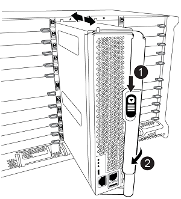
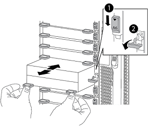

安装光纤连接的 MetroCluster
安装光纤连接的 MetroCluster
使用切换和切回功能将MetroCluster FC配置中的AFF A700/FAS9000控制器升级到AFF A900/FAS9500 (ONTAP 9.10.1或更高版本)
 建议更改
建议更改
升级配对集群上的控制器模块时，您可以使用 MetroCluster 切换操作为客户端提供无中断服务。您不能在此操作步骤中升级其他组件（例如存储架或交换机）。
-
此操作步骤只能用于控制器升级。
您不能同时升级配置中的其他组件，例如存储架或交换机。
-
您可以使用此操作步骤 将AFF A700升级到使用ONTAP 9.10.1及更高版本的AFF A900。
-
您可以使用此操作步骤 将FAS9000升级到使用ONTAP 9.10.1P3及更高版本的FAS9000。
-
ONTAP 9.10.1 及更高版本支持四节点和八节点配置。

AFF A900 系统仅在 ONTAP 9.10.1 或更高版本中受支持。
-
-
配置中的所有控制器都应在同一维护期间进行升级。
下表显示了控制器升级支持的型号列表。
旧平台型号
新平台型号
-
AFF A700
-
AFF A900
-
FAS9000
-
FAS9500
-
-
在升级操作步骤期间，您需要更改 MetroCluster 网络结构，包括 RCF 和布线的物理更改。您可以在执行控制器升级之前执行 RCF 和布线更改。
-
此升级操作步骤不要求您不更改原始节点与新节点之间的存储， FC 和以太网连接。
-
在升级操作步骤 期间、您不应在AFF A700或FAS9000系统中添加或删除其他卡。有关详细信息，请参见 "NetApp Hardware Universe"
以下示例名称在此操作步骤 的示例和图形中使用：
-
site_A
-
升级前：
-
node_A_1-A700
-
node_A_2-A700
-
-
升级后：
-
node_A_1-A900
-
node_A_2-A900
-
-
-
站点 B
-
升级前：
-
node_B_1-A700
-
node_B_2-A700
-
-
升级后：
-
node_B_1-A900
-
node_B_2-A900
-
-
准备升级。
在对现有MetroCluster 配置进行任何更改之前、您必须检查此配置的运行状况、更改RCF文件和布线、使其与AFF A900或FAS9000光纤MetroCluster 配置所需的新端口连接拓扑相匹配、并执行其他各种任务。
清除 AFF A700 控制器上的插槽 7
AFF A900或FAS9500上的MetroCluster 配置需要在插槽5和7中的FC-VI卡上使用8个FC-VI端口。开始升级之前、如果AFF A700或FAS9000上的插槽7中有卡、则必须将其移动到集群中所有节点的其他插槽中。
验证 MetroCluster 配置的运行状况。
在更新AFF A900或FAS9500Fabric MetroCluster 配置的RCF文件和布线之前、您必须验证此配置的运行状况和连接。
-
在 ONTAP 中验证 MetroCluster 配置的运行情况：
-
检查节点是否为多路径： +
node run -node node-name sysconfig -a您应对 MetroCluster 配置中的每个节点使用此命令问题描述。
-
验证配置中是否没有损坏的磁盘：
storage disk show -broken您应在 MetroCluster 配置中的每个节点上问题描述此命令。
-
检查是否存在任何运行状况警报：
s系统运行状况警报显示您应在每个集群上问题描述此命令。
-
验证集群上的许可证：
s系统许可证显示您应在每个集群上问题描述此命令。
-
验证连接到节点的设备：
network device-discovery show您应在每个集群上问题描述此命令。
-
验证两个站点上的时区和时间设置是否正确：
集群日期显示
您应在每个集群上问题描述此命令。您可以使用
cluster date命令配置时间和时区。 -
-
检查交换机上是否存在任何运行状况警报（如果存在）：
s存储开关显示您应在每个集群上问题描述此命令。
-
确认 MetroCluster 配置的运行模式并执行 MetroCluster 检查。
-
确认 MetroCluster 配置以及操作模式是否正常：
MetroCluster show -
确认显示所有预期节点：
MetroCluster node show -
问题描述以下命令：
MetroCluster check run -
显示 MetroCluster 检查的结果：
MetroCluster check show`
-
-
使用 Config Advisor 工具检查 MetroCluster 布线。
-
下载并运行 Config Advisor 。
-
运行 Config Advisor 后，查看该工具的输出并按照输出中的建议解决发现的任何问题。
-
更新光纤交换机 RCF 文件
与AFF A700所需的一个四端口FC-VI适配器相比、AFF A900或FAS9500Fabric MetroCluster 要求每个节点使用两个四端口FC-VI适配器。在开始将控制器升级到AFF A900或FAS9500控制器之前、您必须修改光纤交换机RCF文件以支持AFF A900或FAS9500连接拓扑。
-
从 "MetroCluster RCF 文件下载页面"下、下载适用于AFF A900或FAS9500Fabric MetroCluster 以及AFF A700或FAS9000配置中使用的交换机型号的正确RCF文件。
-
【更新 RCF 】按照中的步骤更新网络结构 A 交换机，交换机 A1 和交换机 B1 上的 RCF 文件 "配置 FC 交换机"。
支持AFF A900或FAS9500Fabric MetroCluster 配置的RCF文件更新不会影响用于AFF A700或FAS9000 Fabric MetroCluster 配置的端口和连接。 -
更新网络结构 A 交换机上的 RCF 文件后，所有存储和 FC-VI 连接都应联机。检查 FC-VI 连接：
MetroCluster 互连镜像显示-
s本地和远程站点磁盘是否列在sysconfig 输出中。
-
-
【验证运行状况】在更新阵列 A 交换机的 RCF 文件后，您必须验证 MetroCluster 是否处于运行状况良好的状态。
-
检查城域集群连接：
MetroCluster interconnect mirror show -
运行 MetroCluster check ：
MetroCluster check run -
运行完成后，请查看 MetroCluster 运行结果：
MetroCluster check show
-
在更新 RCF 文件后验证 MetroCluster 配置的运行状况
在执行升级之前，您必须验证 MetroCluster 配置的运行状况和连接。
-
在 ONTAP 中验证 MetroCluster 配置的运行情况：
-
检查节点是否为多路径： +
node run -node node-name sysconfig -a您应对 MetroCluster 配置中的每个节点使用此命令问题描述。
-
验证配置中是否没有损坏的磁盘：
storage disk show -broken您应在 MetroCluster 配置中的每个节点上问题描述此命令。
-
检查是否存在任何运行状况警报：
s系统运行状况警报显示您应在每个集群上问题描述此命令。
-
验证集群上的许可证：
s系统许可证显示您应在每个集群上问题描述此命令。
-
验证连接到节点的设备：
network device-discovery show您应在每个集群上问题描述此命令。
-
验证两个站点上的时区和时间设置是否正确：
集群日期显示
您应在每个集群上问题描述此命令。您可以使用
cluster date命令配置时间和时区。 -
-
检查交换机上是否存在任何运行状况警报（如果存在）：
s存储开关显示您应在每个集群上问题描述此命令。
-
确认 MetroCluster 配置的运行模式并执行 MetroCluster 检查。
-
确认 MetroCluster 配置以及操作模式是否正常：
MetroCluster show -
确认显示所有预期节点：
MetroCluster node show -
问题描述以下命令：
MetroCluster check run -
显示 MetroCluster 检查的结果：
MetroCluster check show`
-
-
使用 Config Advisor 工具检查 MetroCluster 布线。
-
下载并运行 Config Advisor 。
-
运行 Config Advisor 后，查看该工具的输出并按照输出中的建议解决发现的任何问题。
-
将端口从AFF A700或FAS9000节点映射到AFF A900或FAS9500节点
在控制器升级过程中，您只能更改此操作步骤中提及的连接。
如果AFF A700或FAS9000控制器的插槽7中有一个卡、则应先将其移至另一个插槽、然后再开始控制器升级操作步骤。您必须有插槽7、才能添加第二个FC-VI适配器、该适配器是AFF A900或FAS9500控制器上光纤MetroCluster 正常运行所需的。
在升级之前收集信息
在升级之前、您必须收集每个旧节点的信息、并在必要时调整网络广播域、删除所有VLAN和接口组以及收集加密信息。
此任务将在现有 MetroCluster FC 配置上执行。
-
收集 MetroCluster 配置节点系统 ID ：
MetroCluster node show -fields node-systemID ， dr-partner-systemID在升级操作步骤期间、您将使用控制器模块的系统ID替换这些旧系统ID。
在此示例中，对于四节点 MetroCluster FC 配置，将检索以下旧系统 ID ：
-
node_A_1-A700 ： 537037649
-
node_A_2-A700 ： 537407030
-
node_B_1-A700 ： 0537407114
-
node_B_2-A700 ： 537035354
Cluster_A::*> metrocluster node show -fields node-systemid,ha-partner-systemid,dr-partner-systemid,dr-auxiliary-systemid dr-group-id cluster node node-systemid ha-partner-systemid dr-partner-systemid dr-auxiliary-systemid ----------- ------------------------- ------------- ------------------- ------------------- --------------------- 1 Cluster_A nodeA_1-A700 537407114 537035354 537411005 537410611 1 Cluster_A nodeA_2-A700 537035354 537407114 537410611 537411005 1 Cluster_B nodeB_1-A700 537410611 537411005 537035354 537407114 1 Cluster_B nodeB_2-A700 537411005 4 entries were displayed.
-
-
收集每个旧节点的端口和LIF信息。
您应收集每个节点的以下命令输出：
-
network interface show -role cluster ， node-mgmt -
network port show -node node-name -type physical -
network port vlan show -node node-name -
network port ifgrp show -node node_name -instance -
network port broadcast-domain show -
网络端口可访问性 show -detail -
network IPspace show -
volume show -
s存储聚合显示 -
ssystem node run -node node-name sysconfig -a
-
-
如果 MetroCluster 节点采用 SAN 配置，请收集相关信息。
您应收集以下命令的输出：
-
fcp adapter show -instance -
fcp interface show -instance -
iscsi interface show -
ucadmin show
-
-
如果根卷已加密，请收集并保存用于 key-manager 的密码短语：
security key-manager backup show -
如果 MetroCluster 节点对卷或聚合使用加密，请复制有关密钥和密码短语的信息。
对于追加信息，请参见 "手动备份板载密钥管理信息"。
-
如果配置了板载密钥管理器：
s安全密钥管理器板载 show-backup您稍后将在升级操作步骤中需要此密码短语。
-
如果配置了企业密钥管理（ KMIP ），请问题描述执行以下命令：
security key-manager external show -instance
s安全密钥管理器密钥查询 -
从 Tiebreaker 或其他监控软件中删除现有配置
如果使用 MetroCluster Tiebreaker 配置或可启动切换的其他第三方应用程序（例如 ClusterLion ）监控现有配置，则必须在过渡之前从 Tiebreaker 或其他软件中删除 MetroCluster 配置。
-
从 Tiebreaker 软件中删除现有 MetroCluster 配置。
-
从可以启动切换的任何第三方应用程序中删除现有 MetroCluster 配置。
请参见该应用程序的文档。
在维护之前发送自定义 AutoSupport 消息
在执行维护问题描述之前，您应发送 AutoSupport 消息以通知 NetApp 技术支持正在进行维护。告知技术支持正在进行维护，可防止他们在假定已发生中断的情况下创建案例。
必须在每个 MetroCluster 站点上执行此任务。
-
要防止自动生成支持案例，请发送一条 AutoSupport 消息以指示正在进行维护。
-
问题描述以下命令：
ssystem node AutoSupport invoke -node * -type all -message MAIN=maintenance-window-in-hoursmaintenance-window-in-hours指定维护时段的长度，最长为 72 小时。如果在该时间过后完成维护，您可以调用一条 AutoSupport 消息，指示维护期结束：
ssystem node AutoSupport invoke -node * -type all -message MAINT=end-
在配对集群上重复此命令。
-
切换 MetroCluster 配置
您必须将配置切换到 site_A ，以便可以升级 site_B 上的平台。
必须在 site_A 上执行此任务
完成此任务后， site_A 处于活动状态，并为两个站点提供数据。site_B 处于非活动状态，并已准备好开始升级过程，如下图所示。(此图还显示了适用场景 将FAS9000升级到FAS9500控制 器。)

-
将 MetroCluster 配置切换到 site_A ，以便可升级 site_B 的节点：
-
对 site_A 执行问题描述以下命令：
MetroCluster switchover -controller-replacement true`
此操作可能需要几分钟才能完成。
-
监控切换操作：
MetroCluster 操作显示 -
操作完成后，确认节点处于切换状态：
MetroCluster show -
检查 MetroCluster 节点的状态：
MetroCluster node show
-
-
修复数据聚合。
-
修复数据聚合。
MetroCluster heal data-aggregates -
在运行正常的集群上运行
MetroCluster operation show命令，以确认修复操作已完成：cluster_A::> metrocluster operation show Operation: heal-aggregates State: successful Start Time: 7/29/2020 20:54:41 End Time: 7/29/2020 20:54:42 Errors: -
-
-
修复根聚合。
-
修复数据聚合。
MetroCluster 修复根聚合`
-
在运行正常的集群上运行
MetroCluster operation show命令，以确认修复操作已完成：cluster_A::> metrocluster operation show Operation: heal-root-aggregates State: successful Start Time: 7/29/2020 20:58:41 End Time: 7/29/2020 20:59:42 Errors: -
-
删除site_B上的AFF A700或FAS9000控制器模块和NVS
您必须从配置中删除旧控制器。
您可以在 site_B 上执行此任务
如果您尚未接地，请正确接地。
-
连接到 site_B 上旧控制器（ node_B_1-700 和 node_B_2-700 ）的串行控制台，并验证它是否显示
LOADER提示符。 -
从 site_B 的两个节点收集 bootarg 值：
printenv -
关闭 site_B 上的机箱
从 site_B 的两个节点中删除控制器模块和 NVS
卸下AFF A700或FAS9000控制器模块
使用以下操作步骤 删除AFF A700或FAS9000控制器模块。
-
在卸下控制器模块之前，请断开控制台缆线（如果有）以及管理缆线与控制器模块的连接。
-
解锁控制器模块并将其从机箱中卸下。
-
Slide the orange button on the cam handle downward until it unlocks.


Cam handle release button

Cam handle
-
Rotate the cam handle so that it completely disengages the controller module from the chassis, and then slide the controller module out of the chassis.Make sure that you support the bottom of the controller module as you slide it out of the chassis.
-
卸下AFF A700或FAS9000 NVS模块
使用以下操作步骤 删除AFF A700或FAS9000 NVS模块。
|
|
AFF A700或FAS9000 NVS模块位于插槽6中、与系统中的其他模块相比、其高度是原来的两倍。 |
-
从插槽 6 解锁 NVS 并将其卸下。
-
Depress the lettered and numbered cam button.The cam button moves away from the chassis.
-
Rotate the cam latch down until it is in a horizontal position.NVS 从机箱中分离并移动几英寸。
-
拉动模块侧面的拉片，将 NVS 从机箱中卸下。

Lettered and numbered I/O cam latch
I/O latch completely unlocked
-
|
|
|
安装AFF A900或FAS9500NVS和控制器模块
您必须在Site_B的两个节点上安装升级套件中的AFF A900或FAS9500NVS和控制器模块请勿将核心转储设备从AFF A700或FAS9000 NVS模块移至AFF A900或FAS9500NVS模块。
如果您尚未接地，请正确接地。
安装AFF A900或FAS9500NVS
使用以下操作步骤 在site_B的两个节点的插槽6中安装AFF A900或FAS9500NVS
-
将 NVS 与插槽 6 中机箱开口的边缘对齐。
-
将 NVS 轻轻滑入插槽，直到带字母和编号的 I/O 凸轮闩锁开始与 I/O 凸轮销啮合，然后将 I/O 凸轮闩锁一直向上推，以将 NVS 锁定到位。
Lettered and numbered I/O cam latch
I/O latch completely unlocked
安装AFF A900或FAS9500控制器模块
使用以下操作步骤 安装AFF A900或FAS9500控制 器模块。
-
Align the end of the controller module with the opening in the chassis, and then gently push the controller module halfway into the system.
-
Firmly push the controller module into the chassis until it meets the midplane and is fully seated.控制器模块完全就位后，锁定闩锁会上升。

Do not use excessive force when sliding the controller module into the chassis to avoid damaging the connectors. -
使用缆线将管理和控制台端口连接到控制器模块。
Cam handle release button
Cam handle
-
在每个节点的插槽 7 中安装第二个 X91129A 卡。
-
将 FC-VI 端口从插槽 7 连接到交换机。请参见 "光纤连接安装和配置" 记录并转至适用于您环境中交换机类型的AFF A900或FAS9500光纤MetroCluster 连接要求。
-
-
打开机箱电源并连接到串行控制台。
-
BIOS 初始化后，如果节点开始自动启动，请按 Ctrl-C 中断自动启动
-
中断自动启动后，节点将在 LOADER 提示符处停止。如果您未及时中断自动启动，而 node1 开始启动，请等待提示按 Ctrl-C 进入启动菜单。节点停留在启动菜单后，使用选项 8 重新启动节点并在重新启动期间中断自动启动。
-
在
LOADER提示符处，设置默认环境变量：set-defaults -
保存默认环境变量设置：
saveenv
通过网络启动 site_B 上的节点
在交换AFF A900或FAS9500控制 器模块和NVS之后、您需要通过网络启动AFF A900或FAS9500节点、并安装与集群上运行的相同ONTAP 版本和修补程序级别。术语 netboot 表示您从远程服务器上存储的 ONTAP 映像启动。在准备 netboot 时，您必须将 ONTAP 9 启动映像的副本添加到系统可以访问的 Web 服务器上。
无法检查AFF A900或FAS9500控制器模块的启动介质上安装的ONTAP 版本、除非该模块安装在机箱中并已启动。AFF A900或FAS9500启动介质上的ONTAP 版本必须与要升级的AFF A700或FAS9000系统上运行的ONTAP 版本相同、并且主启动映像和备份启动映像都应匹配。您可以通过在启动菜单中依次执行 netboot 和 wipeconfig 命令来配置映像。如果控制器模块先前已在另一个集群中使用，则 wipeconfig 命令将清除启动介质上的任何剩余配置。
-
确认您可以使用系统访问 HTTP 服务器。
-
您需要从下载系统所需的系统文件以及正确版本的 ONTAP "NetApp 支持" 站点关于此任务，如果安装的 ONTAP 版本与原始控制器上安装的版本不同，则必须
netboot新控制器。安装每个新控制器后，您可以从 Web 服务器上存储的 ONTAP 9 映像启动系统。然后，您可以将正确的文件下载到启动介质设备，以供后续系统启动。
-
访问 "NetApp 支持" 下载执行用于执行系统网络启动的系统网络启动所需的文件。
-
` 步骤 2-download-software]] 从 NetApp 支持站点的软件下载部分下载相应的 ONTAP 软件，并将` <ontap_version>_image.tgz 文件存储在可通过 Web 访问的目录中。
-
切换到可通过 Web 访问的目录，并验证所需文件是否可用。您的目录列表应包含 ` <ontap_version>_image.tgz` 。
-
选择以下操作之一，配置
netboot连接。注：您应使用管理端口和 IP 作为netboot连接。请勿使用数据 LIF IP ，否则在执行升级期间可能会发生数据中断。动态主机配置协议（ DHCP ）
那么 …
正在运行
在启动环境提示符处使用以下命令自动配置连接：
ifconfig e0M -auto未运行
在启动环境提示符处使用以下命令手动配置连接：
ifconfig e0M -addr=<filer_addr> -mask=<netmask> -gw=<gateway> - dns=<dns_addr> domain=<dns_domain>` <filer_addr>` 是存储系统的 IP 地址。` < 网络掩码 >` 是存储系统的网络掩码。` < 网关 >` 是存储系统的网关。` <dns_addr>` 是网络上名称服务器的 IP 地址。此参数是可选的。` <dns_domain>` 是域名服务（ DNS ）域名。此参数是可选的。注意：您的接口可能需要其他参数。有关详细信息，请在固件提示符处输入 help ifconfig 。 -
在节点 1 上执行
netboot：netboot http://<web_server_ip/path_to_web_accessible_directory>/netboot/kernel` <path_to_the_web-accessible_directory>` 应指向您在中下载 ` <ontap_version>_image.tgz` 的位置 第 2 步。
请勿中断启动。 -
等待AFF A900或FAS9500控制 器模块上运行的节点1启动、并显示启动菜单选项、如下所示：
Please choose one of the following: (1) Normal Boot. (2) Boot without /etc/rc. (3) Change password. (4) Clean configuration and initialize all disks. (5) Maintenance mode boot. (6) Update flash from backup config. (7) Install new software first. (8) Reboot node. (9) Configure Advanced Drive Partitioning. (10) Set Onboard Key Manager recovery secrets. (11) Configure node for external key management. Selection (1-11)?
-
从启动菜单中，选择选项 ` （ 7 ） Install new software first` 。此菜单选项可下载新的 ONTAP 映像并将其安装到启动设备中。
请忽略以下消息： HA 对上的无中断升级不支持此操作步骤。本说明将适用场景无中断 ONTAP 软件升级，而不是控制器升级。请始终使用 netboot 将新节点更新为所需映像。如果您使用其他方法在新控制器上安装映像，则可能会安装不正确的映像。此问题描述适用场景所有 ONTAP 版本。 -
如果系统提示您继续运行操作步骤，请输入
y，并在系统提示您输入软件包时，输入 URL ：http://<web_server_ip/path_to_web-accessible_directory>/<ontap_version>_image.tgz[] -
完成以下子步骤以重新启动控制器模块：
-
出现以下提示时，输入
n以跳过备份恢复：do you want to restore the backup configuration now ？｛ y|n ｝ -
出现以下提示时，输入
y以重新启动：必须重新启动节点才能开始使用新安装的软件。是否要立即重新启动？｛ y|n ｝控制器模块重新启动，但停留在启动菜单处，因为启动设备已重新格式化，并且需要还原配置数据。
-
-
在提示符处，运行
wipeconfig命令以清除启动介质上先前的任何配置：-
当您看到以下消息时，问题解答
yes：此操作将删除关键系统配置，包括集群成员资格。警告：不要在已被接管的 HA 节点上运行此选项。确实要继续？： -
节点将重新启动以完成
wipeconfig，然后停留在启动菜单处。
-
-
从启动菜单中选择选项
5以转到维护模式。按问题解答yes显示提示，直到节点在维护模式和命令提示符 ` * >` 停止。
还原 HBA 配置
根据控制器模块中是否存在 HBA 卡以及 HBA 卡的配置，您需要根据站点的使用情况正确配置这些卡。
-
在维护模式下，为系统中的任何 HBA 配置设置：
-
检查端口的当前设置：
ucadmin show -
根据需要更新端口设置。
如果您具有此类型的 HBA 和所需模式 …
使用此命令 …
CNA FC
ucadmin modify -m fc -t initiator adapter-nameCNA 以太网
ucadmin modify -mode cna adapter-nameFC 目标
fcadmin config -t target adapter-nameFC 启动程序
fcadmin config -t initiator adapter-name -
在新控制器和机箱上设置 HA 状态
您必须验证控制器和机箱的 HA 状态，并在必要时更新此状态以匹配您的系统配置。
-
在维护模式下，显示控制器模块和机箱的 HA 状态：
ha-config show所有组件的 HA 状态均应为 mcc 。
-
如果显示的控制器或机箱系统状态不正确，请设置 HA 状态：
ha-config modify controller mccha-config modify chassis mcc -
暂停节点：
halt节点应在loader>提示符处停止。 -
在每个节点上，检查系统日期，时间和时区：
show date -
如有必要，请使用 UTC 或格林威治标准时间（ GMT ）：
set date <MM/dd/yyy>设置日期 -
在启动环境提示符处使用以下命令检查时间：
show time -
如有必要，请以 UTC 或 GMT 格式设置时间：
set time <hh ： mm ： ss> -
保存设置：
saveenv -
收集环境变量：
printenv -
将节点重新启动到维护模式，以使配置更改生效：
boot_ontap maint -
验证所做的更改是否有效， ucadmin 是否显示 FC 启动程序端口联机。
如果您使用此类型的 HBA…
使用此命令…
CNA
ucadmin showFC
fcadmin show -
验证 ha-config 模式：
ha-config show-
验证您是否具有以下输出：
*> ha-config show Chassis HA configuration: mcc Controller HA configuration: mcc
-
在新控制器和机箱上设置 HA 状态
您必须验证控制器和机箱的 HA 状态，并在必要时更新此状态以匹配您的系统配置。
-
在维护模式下，显示控制器模块和机箱的 HA 状态：
ha-config show所有组件的 HA 状态均应为 mcc 。
如果 MetroCluster 配置 …
HA 状态应为 …
两个节点
MCC-2n
四个或八个节点
MCC
-
如果显示的控制器系统状态不正确，请设置控制器模块和机箱的 HA 状态：
如果 MetroCluster 配置 …
问题描述这些命令 …
-
两个节点 *
ha-config modify controller mcc-2nha-config modify chassis mcc-2n-
四个或八个节点 *
ha-config modify controller mccha-config modify chassis mcc -
重新分配根聚合磁盘
使用先前收集的系统将根聚合磁盘重新分配给新控制器模块
此任务在维护模式下执行。
旧系统 ID 在中进行了标识 "升级前收集信息"。
此操作步骤中的示例使用具有以下系统 ID 的控制器：
节点 |
旧系统 ID |
新系统 ID |
node_B_1 |
4068741254 |
1574774970 |
-
使用缆线将所有其他连接连接到新控制器模块（ FC-VI ，存储，集群互连等）。
-
从
LOADER提示符处暂停系统并启动到维护模式：boot_ontap maint -
显示 node_B_1-A700 拥有的磁盘：
d展示 -A示例输出显示了新控制器模块（ 1574774970 ）的系统 ID 。但是，根聚合磁盘仍归旧系统 ID （ 4068741254 ）所有。此示例不显示 MetroCluster 配置中其他节点拥有的驱动器。
*> disk show -a Local System ID: 1574774970 DISK OWNER POOL SERIAL NUMBER HOME DR HOME ------------ ------------- ----- ------------- ------------- ------------- ... rr18:9.126L44 node_B_1-A700(4068741254) Pool1 PZHYN0MD node_B_1-A700(4068741254) node_B_1-A700(4068741254) rr18:9.126L49 node_B_1-A700(4068741254) Pool1 PPG3J5HA node_B_1-A700(4068741254) node_B_1-A700(4068741254) rr18:8.126L21 node_B_1-A700(4068741254) Pool1 PZHTDSZD node_B_1-A700(4068741254) node_B_1-A700(4068741254) rr18:8.126L2 node_B_1-A700(4068741254) Pool0 S0M1J2CF node_B_1-A700(4068741254) node_B_1-A700(4068741254) rr18:8.126L3 node_B_1-A700(4068741254) Pool0 S0M0CQM5 node_B_1-A700(4068741254) node_B_1-A700(4068741254) rr18:9.126L27 node_B_1-A700(4068741254) Pool0 S0M1PSDW node_B_1-A700(4068741254) node_B_1-A700(4068741254) ...
-
将驱动器架上的根聚合磁盘重新分配给新控制器：
dreassign -s old-sysid -d new-sysid以下示例显示了驱动器的重新分配：
*> disk reassign -s 4068741254 -d 1574774970 Partner node must not be in Takeover mode during disk reassignment from maintenance mode. Serious problems could result!! Do not proceed with reassignment if the partner is in takeover mode. Abort reassignment (y/n)? n After the node becomes operational, you must perform a takeover and giveback of the HA partner node to ensure disk reassignment is successful. Do you want to continue (y/n)? Jul 14 19:23:49 [localhost:config.bridge.extra.port:error]: Both FC ports of FC-to-SAS bridge rtp-fc02-41-rr18:9.126L0 S/N [FB7500N107692] are attached to this controller. y Disk ownership will be updated on all disks previously belonging to Filer with sysid 4068741254. Do you want to continue (y/n)? y
-
检查是否已按预期重新分配所有磁盘：
disk show*> disk show Local System ID: 1574774970 DISK OWNER POOL SERIAL NUMBER HOME DR HOME ------------ ------------- ----- ------------- ------------- ------------- rr18:8.126L18 node_B_1-A900(1574774970) Pool1 PZHYN0MD node_B_1-A900(1574774970) node_B_1-A900(1574774970) rr18:9.126L49 node_B_1-A900(1574774970) Pool1 PPG3J5HA node_B_1-A900(1574774970) node_B_1-A900(1574774970) rr18:8.126L21 node_B_1-A900(1574774970) Pool1 PZHTDSZD node_B_1-A900(1574774970) node_B_1-A900(1574774970) rr18:8.126L2 node_B_1-A900(1574774970) Pool0 S0M1J2CF node_B_1-A900(1574774970) node_B_1-A900(1574774970) rr18:9.126L29 node_B_1-A900(1574774970) Pool0 S0M0CQM5 node_B_1-A900(1574774970) node_B_1-A900(1574774970) rr18:8.126L1 node_B_1-A900(1574774970) Pool0 S0M1PSDW node_B_1-A900(1574774970) node_B_1-A900(1574774970) *>
-
显示聚合状态：
aggr status*> aggr status Aggr State Status Options aggr0_node_b_1-root online raid_dp, aggr root, nosnap=on, mirrored mirror_resync_priority=high(fixed) fast zeroed 64-bit -
在配对节点（ node_B_2-A900 ）上重复上述步骤。
启动新控制器
您必须从启动菜单重新启动控制器，才能更新控制器闪存映像。如果配置了加密，则需要执行其他步骤。
必须对所有新控制器执行此任务。
-
暂停节点：
halt -
如果配置了外部密钥管理器，请设置相关的 boottargets ：
setenv bootarg.kmip.init.ipaddr ip-addresssetenv bootarg.kmip.init.netmask netmasksetenv bootarg.kmip.init.gateway gateway-addresssetenv bootarg.kmip.init.interface interface-id -
显示启动菜单：
boot_ontap menu -
如果使用根加密，请对密钥管理配置使用问题描述启动菜单命令。
如果您使用的是 …
选择此启动菜单选项 …
板载密钥管理
选项 10 ，然后按照提示提供所需的输入以恢复或还原密钥管理器配置
外部密钥管理
选项 11 ，然后按照提示提供所需的输入以恢复或还原密钥管理器配置
-
如果启用了自动启动，请按 control-C 中断自动启动
-
从启动菜单中，运行选项（ 6 ）。
选项 6 将重新启动节点两次，然后再完成 对系统 ID 更改提示回答
y。等待第二条重新启动消息：Successfully restored env file from boot media... Rebooting to load the restored env file...
-
仔细检查 partner-sysid 是否正确：
printenv partner-sysid如果 partner-sysid 不正确，请将其设置为：
setenv partner-sysid partner-sysID -
如果使用根加密，问题描述请针对您的密钥管理配置重新输入启动菜单命令。
如果您使用的是 …
选择此启动菜单选项 …
板载密钥管理
选项 10 ，然后按照提示提供所需的输入以恢复或还原密钥管理器配置
外部密钥管理
选项 11 ，然后按照提示提供所需的输入以恢复或还原密钥管理器配置
您可能需要在启动菜单提示符处多次问题描述
re封装 _xxxxxxxx_keymanager命令，直到节点完全启动为止。 -
启动节点：
boot_ontap -
等待更换的节点启动。
如果任一节点处于接管模式，请使用
storage failover giveback命令执行交还。 -
验证所有端口是否都位于广播域中：
-
查看广播域：
network port broadcast-domain show -
根据需要向广播域添加任何端口。
-
将用于托管集群间 LIF 的物理端口添加到相应的广播域。
-
修改集群间 LIF 以使用新的物理端口作为主端口。
-
集群间 LIF 启动后，检查集群对等状态，并根据需要重新建立集群对等关系。
您可能需要重新配置集群对等关系。
-
根据需要重新创建 VLAN 和接口组。
VLAN 和接口组成员资格可能与旧节点不同。
-
-
如果使用加密，请使用适用于您的密钥管理配置的正确命令还原密钥。
如果您使用的是 …
使用此命令 …
板载密钥管理
sSecurity key-manager 板载同步有关详细信息，请参见 "还原板载密钥管理加密密钥"。
外部密钥管理
sSecurity key-manager external restore -vserver svm -node node-key-server host_name_ip_address ： port -key-id key_id -key-tag key_tag node-name有关详细信息，请参见 "还原外部密钥管理加密密钥"。
验证 LIF 配置
在切回之前，验证 LIF 是否托管在相应的节点 / 端口上。需要执行以下步骤
此任务在 site_B 上执行，其中的节点已使用根聚合启动。
-
在切回之前，验证 LIF 是否托管在相应的节点和端口上。
-
更改为高级权限级别：
set -privilege advanced -
覆盖端口配置以确保 LIF 放置正确：
vserver config override -command "network interface modify -vserver vserver_name -home-port active_port_after_upgrade-lif lif_name -home-node new_node_name"
在
vserver config override命令中输入network interface modify命令时，您不能使用选项卡自动完成功能。您可以使用 autoscomplete 创建network interface modify，然后将其括在vserver config override命令中。-
返回到管理权限级别： +
set -privilege admin
-
-
将接口还原到其主节点：
network interface revert * -vserver vserver-name根据需要对所有 SVM 执行此步骤。
切回 MetroCluster 配置
配置新控制器后，您可以切回 MetroCluster 配置，使配置恢复正常运行。
在此任务中，您将执行切回操作，使 MetroCluster 配置恢复正常运行。site_A上的节点仍在等待升级、如下图所示。(此图还显示了适用场景 将FAS9000升级到FAS9500控制器)。

-
在 site_B 上执行
MetroCluster node show命令并检查输出。问题描述-
验证新节点的表示是否正确。
-
验证新节点是否处于 " 正在等待切回状态 " 。
-
-
切回集群：
MetroCluster 切回 -
检查切回操作的进度：
MetroCluster show当输出显示
waiting for-switchback时，切回操作仍在进行中：cluster_B::> metrocluster show Cluster Entry Name State ------------------------- ------------------- ----------- Local: cluster_B Configuration state configured Mode switchover AUSO Failure Domain - Remote: cluster_A Configuration state configured Mode waiting-for-switchback AUSO Failure Domain -当输出显示
normal时，切回操作完成：cluster_B::> metrocluster show Cluster Entry Name State ------------------------- ------------------- ----------- Local: cluster_B Configuration state configured Mode normal AUSO Failure Domain - Remote: cluster_A Configuration state configured Mode normal AUSO Failure Domain -如果切回需要很长时间才能完成，您可以使用
MetroCluster config-replication resync-status show命令检查正在进行的基线的状态。此命令处于高级权限级别。
检查 MetroCluster 配置的运行状况
升级控制器模块后，您必须验证 MetroCluster 配置的运行状况。
此任务可在 MetroCluster 配置中的任何节点上执行。
-
验证 MetroCluster 配置的运行情况：
-
确认 MetroCluster 配置以及操作模式是否正常：
MetroCluster show -
执行 MetroCluster 检查：
MetroCluster check run -
显示 MetroCluster 检查的结果：
MetroCluster check show`
运行之后
metrocluster check run和metrocluster check show命令时、您可能会看到类似于以下示例的错误：
Cluster_A:: node_A_1 (non-overridable veto): DR partner NVLog mirroring is not online. Make sure that the links between the two sites are healthy and properly configured.
+ 之所以出现此错误、是因为升级过程中控制器不匹配。您可以安全地忽略此错误并继续升级site_A上的节点
-
升级 site_A 上的节点
您必须对 site_A 重复升级任务
-
从开始，重复上述步骤升级 site_A 上的节点 "准备升级。"。
在执行任务时，对站点和节点的所有示例引用都将反转。例如，如果提供了从 site_A 切换的示例，则您将从 Site_B 切换
维护后发送自定义 AutoSupport 消息
完成升级后，您应发送一条 AutoSupport 消息，指示维护结束，以便可以恢复自动创建案例。
-
要恢复自动生成支持案例，请发送 AutoSupport 消息以指示维护已完成。
-
问题描述以下命令：
ssystem node AutoSupport invoke -node * -type all -message MAINT=end -
在配对集群上重复此命令。
-
还原 Tiebreaker 监控
如果先前已将 MetroCluster 配置配置为由 Tiebreaker 软件监控，则可以还原 Tiebreaker 连接。
-
使用中的步骤： "正在添加 MetroCluster 配置" 在 _Tiebreaker MetroCluster 安装和配置 _ 部分。